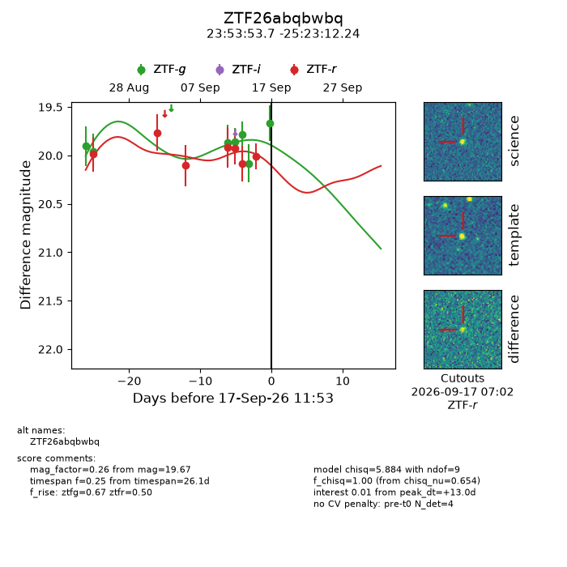
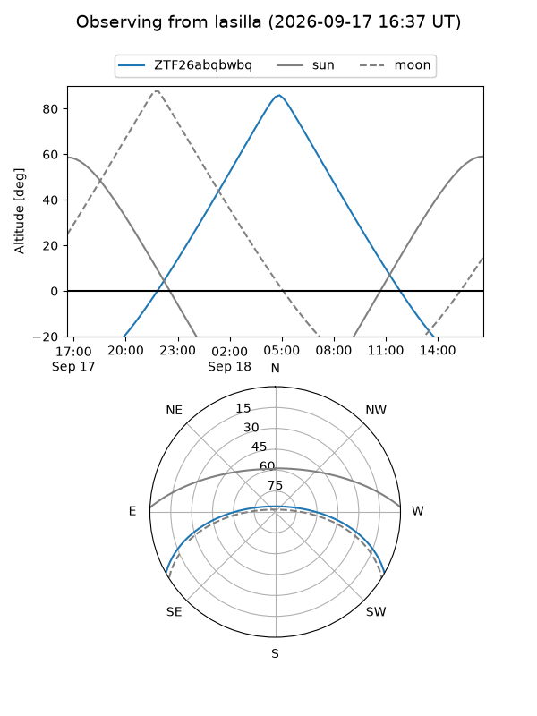
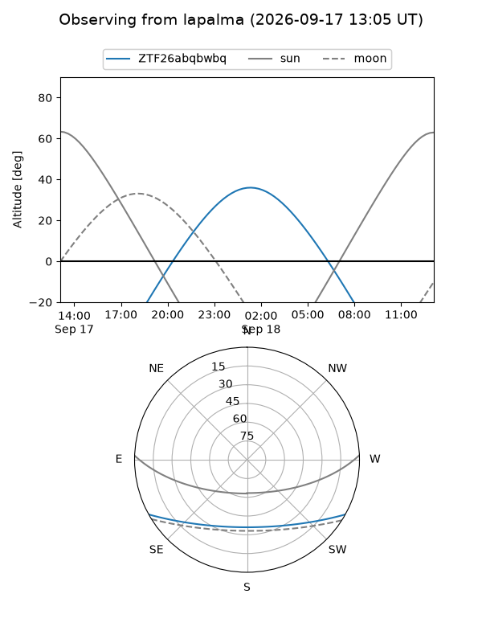
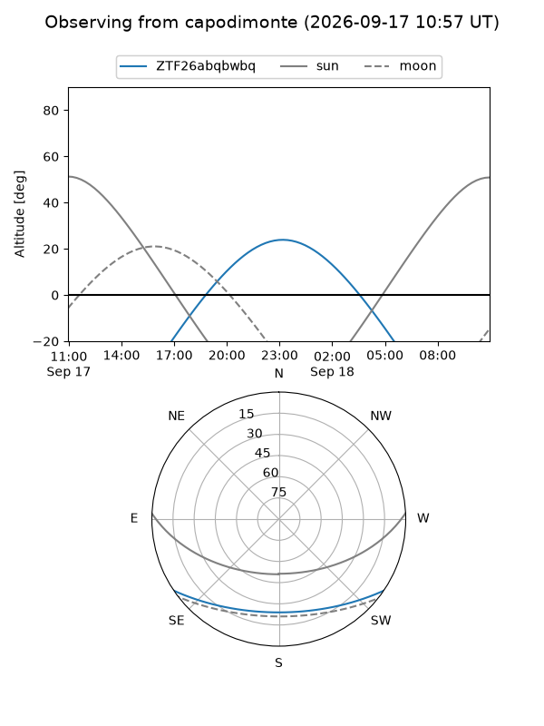
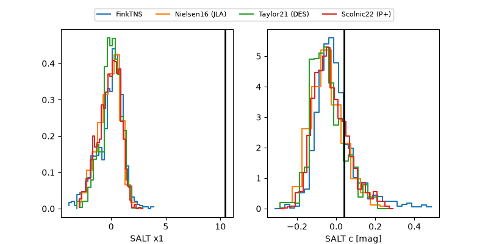

ZTF26abqbwbq
Target ZTF26abqbwbq at 2026-09-17 11:55
Aliases and brokers:
FINK-ZTF: ztf.fink-portal.org/ZTF26abqbwbq
Lasair-ZTF: lasair-ztf.lsst.ac.uk/objects/ZTF26abqbwbq
ALeRCE-ZTF: alerce.online/object/ZTF26abqbwbq
Direct TNS query: direct search
alt names
ZTF26abqbwbq (ztf,fink_ztf)
Coordinates:
equatorial (ra, dec) = 358.4739,-25.38673
equatorial (HMS+DMS) = 23:53:53.73,-25:23:12.24
galactic (l, b) = (37.3835,-76.98921)
Flags:
peak dt: +13.0
Photometry:
last ztfg=19.67, ztfr=20.01
7 ztfg, 7 ztfr detections
Lightcurve

Visibility



Additional plots
